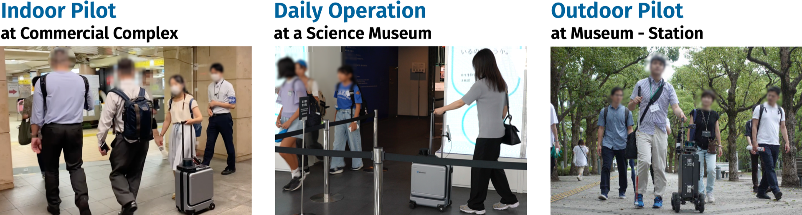

Field Trials of Autonomous Navigation Robot for Visually Impaired People

Abstract
Despite the advances made in assistive technologies for people with visual impairments, challenges remain in unfamiliar public spaces such as shopping malls, museums, and transit hubs. First-time visitors often face difficulties in navigating these environments independently, so they seek both safety and ease. To address this issue, we developed AI Suitcase, a navigation robot that resembles a conventional suitcase. By holding its handle, users are guided safely to their destinations while receiving real-time information about their surroundings, promoting mobility and independence for individuals with visual impairments. This paper presents the results of field trials from a pilot study in a commercial complex, daily operations at a museum, and an outdoor pilot test, involving more than 2,200 participants, a quarter of whom are visually impaired. Positive feedback and interest in using navigational robots in daily life suggest the potential of this technology. The challenges encountered during these trials, which are crucial for practical deployment, are also discussed.
Presentation Video
Publication
Hironobu Takagi, Kakuya Naito, Daisuke Sato, Masayuki Murata, Seita Kayukawa, and Chieko Asakawa.
2025.
Field Trials of Autonomous Navigation Robot for Visually Impaired People.
In Extended Abstracts of the 2025 CHI Conference on Human Factors in Computing Systems (CHI 2025 Case Study).
Authors
Related Projects


Other Links


Acknowledgements
We express our sincere gratitude to all participants in the field trials. We also thank the staff and management of Mitsui Fudosan, the Digital Innovation City Association, the Tokyo Metropolitan Government Bureau of Port and Harbor, and the National Museum of Emerging Science and Innovation (Miraikan) for their invaluable support and cooperation. Their contributions were crucial in the successful execution of our research. Finally, we are deeply grateful to the members of the AI Suitcase Consortium, with whom we have been collaboratively working on this project for many years.
{% include footer.html %}